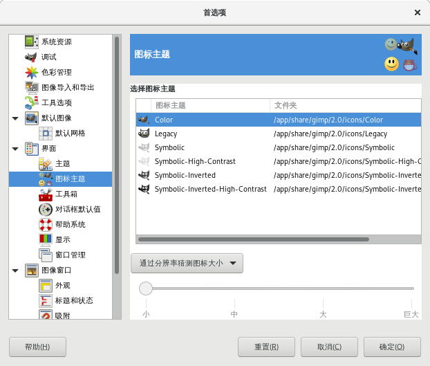

首选项→界面→图标主题
这个可以设置GIMP界面的图标主题。点击列表中的主题后马上就能看到所选主题的效果。
提示
注意这个是图标主题，不是界面主题。
图标主题是用来设置图标的颜色样式的，例如工具箱图标。而界面主题会影响整体界面颜色样式。
界面主题在这里：首选项→界面→主题。
例如把默认的黑白的工具箱图标改成彩色图标：从Symbolic改成Color再点击确定按钮即可。

首选项→界面→图标主题
GIMP默认提供了6种图标主题：
Color：图标是彩色的。
Legacy：这是GIMP早期版本曾经使用过的主题，如果您习惯使用以前的图标样式，可以选择这个主题。
Symbolic：这个图标主题主要是与界面主题Dark配对使用(首选项→界面→主题⇒Dark)。
Symbolic-High-Contrast：与Symbolic相同，只不过对比度更强一点。
Symbolic-Inverted：这个图标主题主要是与界面主题Light配对使用(首选项→界面→主题⇒Light)。
Symbolic-Inverted-High-Contrast：与Symbolic-Inverted相同，只不过对比度更强一点。
这6个主题的左侧都显示了GIMP的logo，从这个logo的颜色上，您可以看到大概的对比差异。
图标尺寸
通过分辨率猜测图标大小：GIMP会自动检测您的分辨率，然后根据检测到的分辨率来自动设置图标尺寸。
使用主题设定的图标大小：不根据分辨率来设定图标尺寸，而是由主题来决定图标尺寸。
自定义图标大小：您可以通过下面的标尺来自行设置图标尺寸。